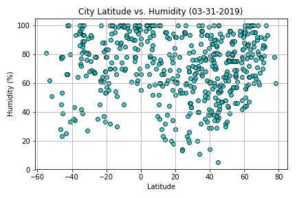

Humidity

The City Latitude vs. Humidity (%) Scatter Plot does not show any significant patterns. What I do notice, is that there tends to be a slightly higher average percentage of humidity between -20 and -60 degrees latitude (West of the equator). Cities at approximately 20 degrees latitude seem to have a humidity percentage between 0% and 20%. This data could vary greatly depending on the month the data is collected.
Visualizations